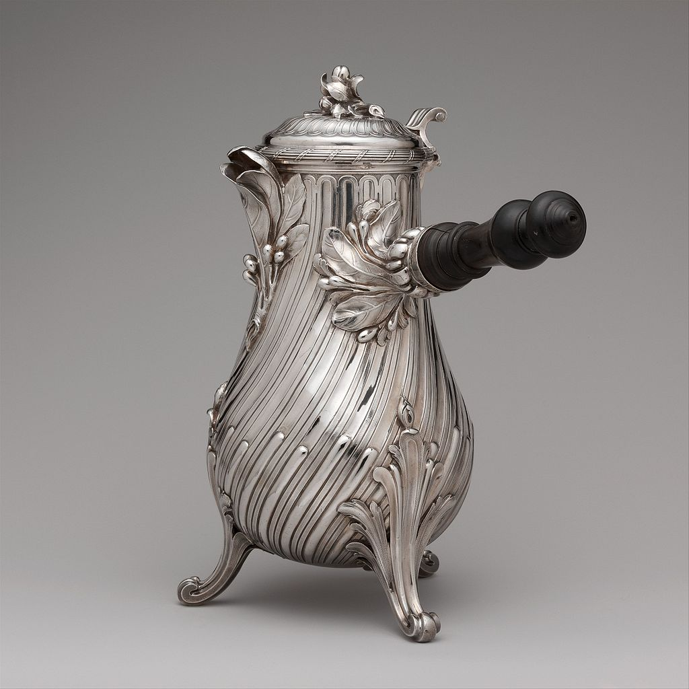
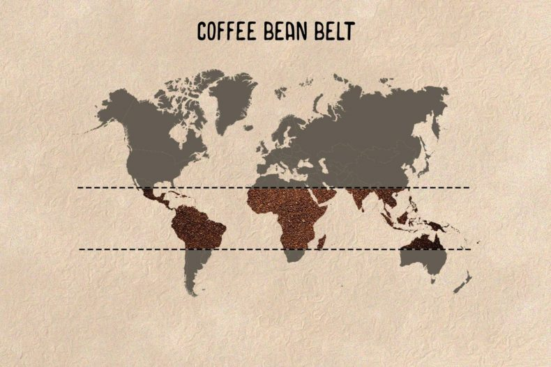

The history of coffee spans many centuries, while wild coffee plants originated in Ethiopia, the beverage itself first developed in Yemen, where Sufi Muslims in the 15th century used it to aid concentration during night prayers. From Yemen coffee spread to Mecca and the wider Arabian Peninsula, and by the early 15th century it had reached Cairo, Damascus, and Istanbul. Debates over its permissibility arose in Muslim society, but it soon became a central part of urban life. Through Mediterranean trade routes, coffee entered Europe in the mid-16th century, first in Italy and later in other regions. Coffee houses were established in Western Europe by the late 17th century, especially in Holland, England, and Germany. One of the earliest cultivations of coffee in the New World was when Gabriel de Clieu brought coffee seedlings to Martinique in 1720. These beans later sprouted 18,680 coffee trees which enabled its spread to other Caribbean islands such as Saint-Domingue and also to Mexico. By 1788, Saint-Domingue supplied half the world's coffee. For nearly 2 centuries and up to the end of the 17th century, Yemen was the world’s sole gateway for coffee. But as people everywhere developed a taste for it, the plant soon escaped its Arabian home and took root in distant soils.
The word coffee entered the English language in 1582 via the Dutch koffie, borrowed from the Ottoman Turkish kahve (قهوه), borrowed in turn from the Arabic qahwah (قَهْوَة) Medieval Arab lexicographers traditionally held that the etymology of qahwah meant 'wine', given its distinctly dark color, and derived from the verb qahiya (قَهِيَ), 'to have no appetite'. There is no evidence that the word qahwah was named after the Ethiopian province of Kaffa (a part of where coffee originates from: Abyssinia),or any significant authority stating the opposite, or that it is traced to the Arabic quwwa ("power"). A different term for 'coffee', widespread in languages of Ethiopia, is buna, bun, būn or buni (depending on the language). Most often the word group has been assumed to originate from Arabic bunn (بن) meaning specifically the coffee bean, but indigenous origin in Cushitic has been proposed as a possibility as well. The Ottomans' dominant position in the trade in coffee is thought to have influenced several other European languages as well, inspiring "caffè" in Italian and "café" in French. These terms, along with the Dutch koffie emerged at roughly the same time.

Studies of genetic diversity have been performed on Coffea arabica varieties, which were found to be of low diversity but with retention of some residual heterozygosity from ancestral materials, and closely related diploid species Coffea canephora and C. libericahowever, no direct evidence has ever been found indicating where in Africa coffee grew or who among the local people might have used it as a stimulant or known about it there earlier than the seventeenth century. The original domesticated coffee plant is said to have been from Harar, and the native population is thought to be derived from Ethiopia with distinct nearby populations in Sudan and Kenya.
The first step in Europeans' wresting the means of production was effected by Nicolaes Witsen, the enterprising burgomaster of Amsterdam and member of the governing board of the Dutch East India Company who urged Joan van Hoorn, the Dutch governor at Batavia that some coffee plants be obtained at the export port of Mocha in Yemen, the source of Europe's supply, and established in the Dutch East Indies the project of raising many plants from the seeds of the first shipment met with such success that the Dutch East India Company was able to supply Europe's demand with "Java coffee" by 1719. Encouraged by their success, they soon had coffee plantations in Ceylon, Sumatra and other Sunda islands. Coffee trees were soon grown under glass at the Hortus Botanicus of Leiden, whence slips were generously extended to other botanical gardens. Dutch representatives at the negotiations that led to the Treaty of Utrecht presented their French counterparts with a coffee plant, which was grown on at the Jardin du Roi, predecessor of the Jardin des Plantes, in Paris. The introduction of coffee to the Americas was effected by Captain Gabriel des Clieux, who obtained cuttings from the reluctant botanist Antoine de Jussieu, who was loath to disfigure the king's coffee tree. Clieux, when water rations dwindled during a difficult voyage, shared his portion with his precious plants and protected them from a Dutchman, perhaps an agent of the Provinces jealous of the Batavian trade. Clieux nurtured the plants on his arrival in the West Indies, and established them in Guadeloupe and Saint-Domingue in addition to Martinique, where a blight had struck the cacao plantations, which were replaced by coffee plantations in a space of three years, is attributed to France through its colonization of many parts of the continent starting with the Martinique and the colonies of the West Indies where the first French coffee plantations were founded.
he first coffee plantation in Brazil occurred in 1727 when Lt. Col. Francisco de Melo Palheta smuggled seeds, still essentially from the germ plasm originally taken from Yemen to Batavia, from French Guiana. By the 1800s, Brazil's harvests would turn coffee from an elite indulgence to a drink for the masses. Brazil, which like most other countries cultivates coffee as a commercial commodity, relied heavily on slave labor from Africa for the viability of the plantations until the abolition of slavery in 1888. The success of coffee in 17th-century Europe was paralleled with the spread of the habit of tobacco smoking all over the continent during the course of the Thirty Years' War (1618–1648). For many decades in the 19th and early 20th centuries, Brazil was the biggest producer of coffee and a virtual monopolist in the trade. However, a policy of maintaining high prices soon opened opportunities to other nations, such as Venezuela, Colombia,[121] Guatemala, Nicaragua, Indonesia and Vietnam, now second only to Brazil as the major coffee producer in the world. Large-scale production in Vietnam began following normalization of trade relations with the US in 1995.

The Coffee Belt—the coffee-growing region bounded by the Tropic of Cancer and the Tropic of Capricorn—has the climatic conditions to support the cultivation of the vast majority of the world’s coffee plants. Climatic factors most important for coffee growth are temperature and rainfall. No variety can withstand a temperature in the vicinity of 0 °C (32 °F). Temperatures between 23 and 28 °C (73 and 82 °F) are the most favorable. Rainfall of 1,500 to 2,000 mm (60 to 80 inches) per year is required along with a dry period of two to three months for the Arabica. Irrigation is required where annual rainfall is less than 1 meter (40 inches). The Arabica species is more delicate and vulnerable to pests than Robusta and requires a cool subtropical climate; it must grow at higher elevations of 600–2,000 meters (2,000–6,500 feet) and requires a lot of moisture and has fairly specific shade requirements. The Robusta variety, as its name suggests, is hardier and can grow at lower altitudes—from sea level to 600 meters. Plantations are established in cleared forestland for sun-grown coffee or modified forests for shade-grown coffee. The young coffee plants are spaced in rows so that the density varies between 1,200 and 1,800 plants per hectare (500 and 750 plants per acre). Seedlings or cuttings raised in nurseries are carefully planted at the beginning of the rainy season; until they start producing fruit three to four years later, their care is limited largely to the trimming required to give them a strong, balanced framework and to stimulate fruiting.
The practice of grading and classifying coffee gives sellers and buyers a guarantee concerning the origin, nature, and quality of the product to aid in negotiations. Each coffee-producing country has a certain number of defined types and grades—based on characteristics such as growing altitude and region, botanical variety, method of processing, roast appearance, and bean size, density, and defects—but there is no universal grading and classification system. Fair Trade coffee, part of the larger Fair Trade movement, arose to ensure that coffee is harvested and processed without child labor and dangerous herbicides and pesticides and that growers and exporters, particularly in the poorer regions of the coffee-growing world, are paid a fair price. How well such Fair Trade standards are enforced is a matter of controversy.